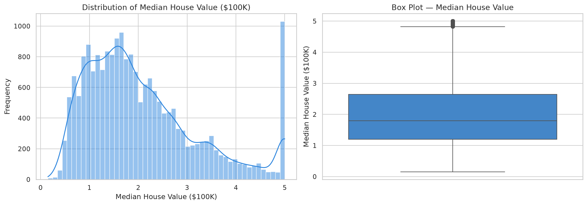
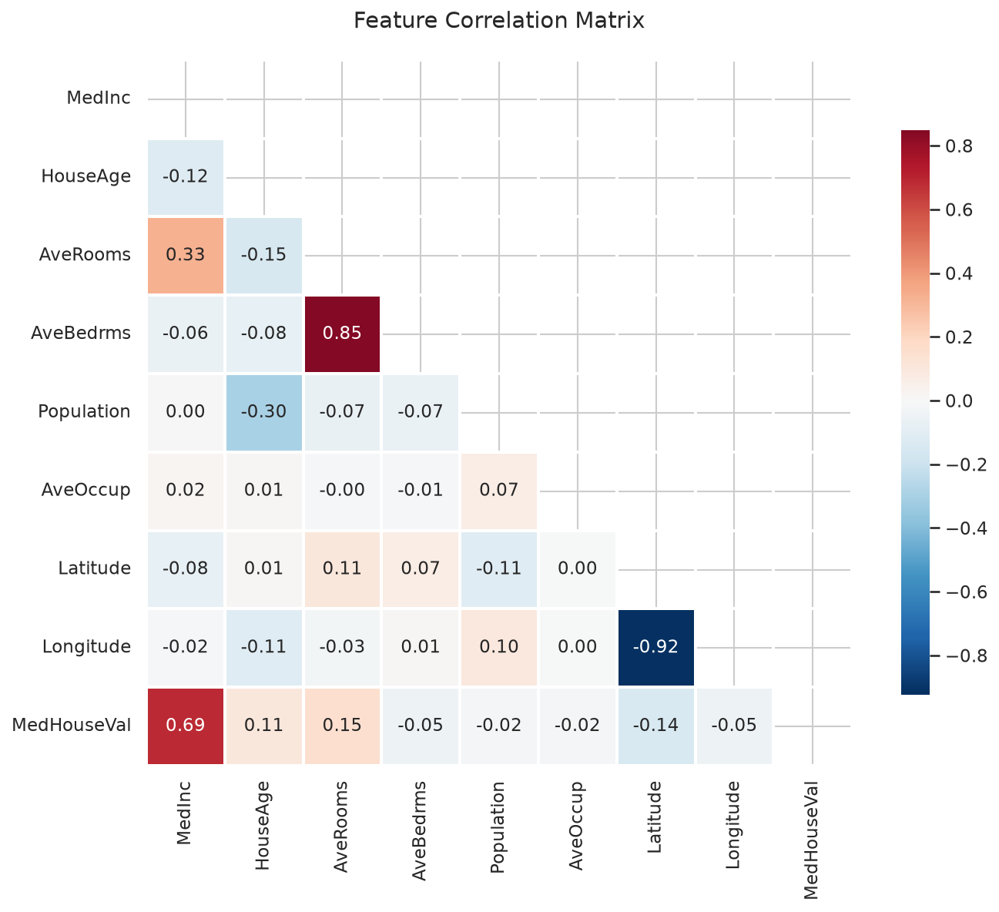
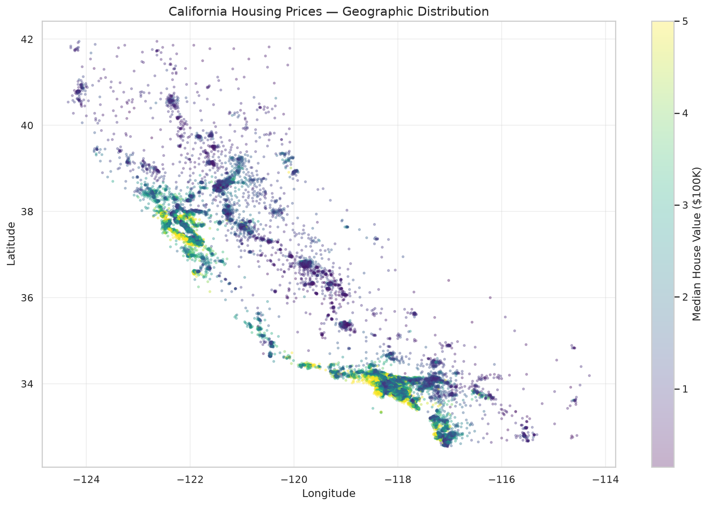
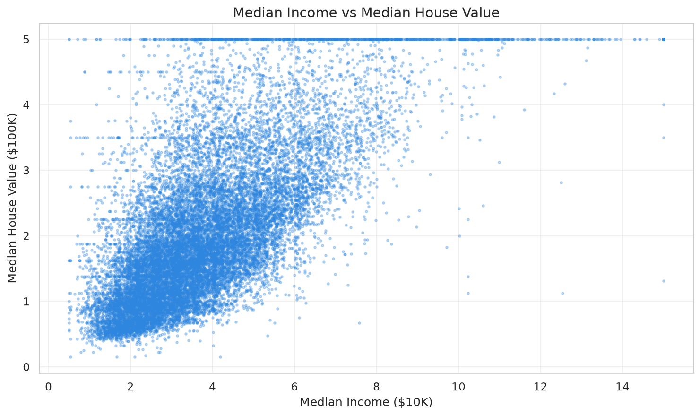

📊 Dataset: California Housing (US Census, 20,640 rows, 10 columns)
▶ Run in Google Colabprint_section("PROJECT 1: EXPLORATORY DATA ANALYSIS & ML TYPES")
"kw">print("Dataset: California Housing(1990 US Census, 20,640 records)")
df = load_csv('housing.csv')
"kw">print(f"\nShape: {df.shape[0]:,} rows × {df.shape[1]} columns")
"kw">print(f"\nColumns: {', '.join(df.columns)}")print_subsection("First 5 rows")
"kw">print(df.head().to_string())
print_subsection("Summary Statistics(numerical)")
"kw">print(df.describe().round(3).to_string())
"kw">class="cmt"># Save summary stats
df.describe().round(3).to_csv(os.path.join(OUTPUT_DIR, 'describe.csv'))
"kw">class="cmt"># ── 2. Data Quality Check ──
print_section("2. Data Quality — Missing Values & Dtypes")
"kw">print(f"\nMissing values per column:")
"kw">print(df.isnull().sum().to_string())
"kw">print(f"\nDtypes:")
"kw">print(df.dtypes.to_string())
"kw">class="cmt"># ── 3. Visualizations ──
print_section("3. Visualizations")
"kw">class="cmt"># 3a. Target distribution
fig, axes = plt.subplots(1, 2, figsize=(14, 5))
sns.histplot(df['MedHouseVal'], bins=50, kde="kw">True, ax=axes[0], color='class="cmt">#2e86de')
axes[0].set_title('Distribution of Median House Value($100K)', fontsize=13)
axes[0].set_xlabel('Median House Value($100K)')
"kw">class="cmt"># ..."kw">class="cmt"># 3a. Target distribution
fig, axes = plt.subplots(1, 2, figsize=(14, 5))
sns.histplot(df['MedHouseVal'], bins=50, kde="kw">True, ax=axes[0], color='class="cmt">#2e86de')
axes[0].set_title('Distribution of Median House Value($100K)', fontsize=13)
axes[0].set_xlabel('Median House Value($100K)')
axes[0].set_ylabel('Frequency')
sns.boxplot(y=df['MedHouseVal'], ax=axes[1], color='class="cmt">#2e86de')
axes[1].set_title('Box Plot — Median House Value', fontsize=13)
axes[1].set_ylabel('Median House Value($100K)')
plt.tight_layout()
save_fig('p1_target_dist', fig)
"kw">print("[Saved] p1_target_dist.png")
"kw">class="cmt"># 3b. Correlation heatmap
fig, ax = plt.subplots(figsize=(10, 8))
corr = df.select_dtypes(include=[np.number]).corr()
mask = np.triu(np.ones_like(corr, dtype=bool))
sns.heatmap(corr, mask=mask, annot="kw">True, fmt='.2f', cmap='RdBu_r',
center=0, square="kw">True, linewidths=1, ax=ax,
cbar_kws={'shrink': 0.8})
ax.set_title('Feature Correlation Matrix', fontsize=14, pad=20)
plt.tight_layout()
save_fig('p1_corr_heatmap', fig)
"kw">print("[Saved] p1_corr_heatmap.png")
"kw">class="cmt"># ...
Distribution of Median House Value (real data)
"kw">class="cmt"># Correlation "kw">with target variable
corr_with_target = df.select_dtypes(include=[np.number]).corr()['MedHouseVal'].drop('MedHouseVal').sort_values(ascending="kw">False)
"kw">print(corr_with_target)
Full correlation matrix (real data)
"kw">print(corr_with_target.to_string())
"kw">class="cmt"># 3c. Geo scatter
fig, ax = plt.subplots(figsize=(12, 8))
sc = ax.scatter(df['Longitude'], df['Latitude'], c=df['MedHouseVal'],
cmap='viridis', alpha=0.3, s=5)
plt.colorbar(sc, ax=ax, label='Median House Value($100K)')
ax.set_title('California Housing Prices — Geographic Distribution', fontsize=14)
ax.set_xlabel('Longitude')
ax.set_ylabel('Latitude')
ax.grid("kw">True, alpha=0.3)
plt.tight_layout()
save_fig('p1_geo_scatter', fig)
"kw">print("[Saved] p1_geo_scatter.png")
"kw">class="cmt"># 3d. Median Income vs House Value
fig, ax = plt.subplots(figsize=(10, 6))
ax.scatter(df['MedInc'], df['MedHouseVal'], alpha=0.3, s=5, c='class="cmt">#2e86de')
ax.set_title('Median Income vs Median House Value', fontsize=14)
ax.set_xlabel('Median Income($10K)')
ax.set_ylabel('Median House Value($100K)')
ax.grid("kw">True, alpha=0.3)
plt.tight_layout()
save_fig('p1_income_vs_value', fig)
"kw">print("[Saved] p1_income_vs_value.png")
"kw">class="cmt"># ...
California housing price map — real census data
"kw">class="cmt"># 3d. Median Income vs House Value
fig, ax = plt.subplots(figsize=(10, 6))
ax.scatter(df['MedInc'], df['MedHouseVal'], alpha=0.3, s=5, c='class="cmt">#2e86de')
ax.set_title('Median Income vs Median House Value', fontsize=14)
ax.set_xlabel('Median Income($10K)')
ax.set_ylabel('Median House Value($100K)')
ax.grid("kw">True, alpha=0.3)
plt.tight_layout()
save_fig('p1_income_vs_value', fig)
"kw">print("[Saved] p1_income_vs_value.png")
"kw">class="cmt"># ── 4. ML Types Discussion ──
print_section("4. ML Types — Applied to Our Dataset")
"kw">print("""
=== 4.1 SUPERVISED LEARNING ===
Task: Predict MedHouseVal(continuous) → REGRESSION
Features: MedInc, HouseAge, AveRooms, Latitude, Longitude, etc.
Target: MedHouseVal
Key question: Given a house's features, what is its expected market value?
This is the classic supervised task — we have labelled training data.
=== 4.2 UNSUPERVISED LEARNING ===
Task: Group similar neighbourhoods → CLUSTERING
">class="cmt"># ...
Income vs House Value — each dot is a real neighborhood
1️⃣ 刚才的代码中，df.describe() 给出了哪些统计量？为什么对真实数据有用？
2️⃣ 散点图中，加州沿海的房价是不是普遍比内陆高？你是怎么知道的？
3️⃣ 这个数据集适合哪种 ML 类型？SL/UL/RL？为什么？
4️⃣ 如果我要在课堂上用 2GB RAM 的笔记本跑这段代码，行不行？